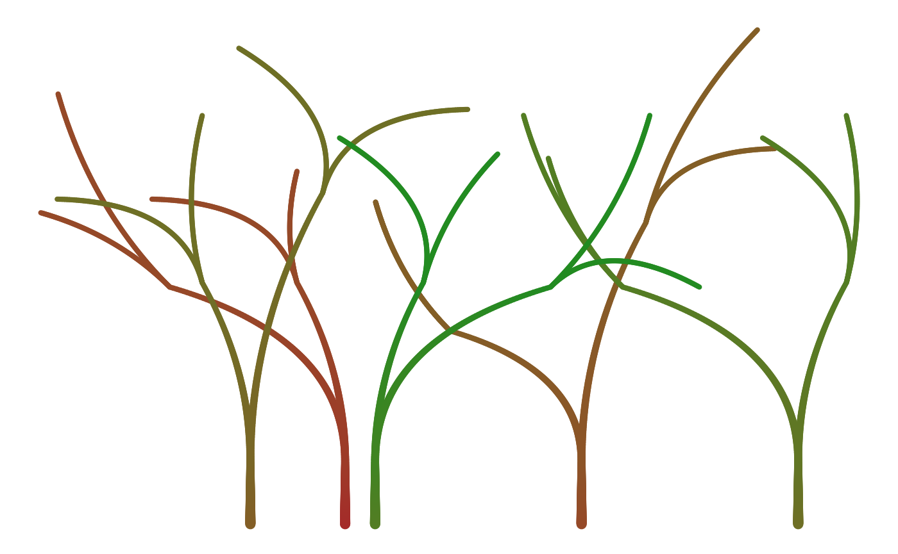
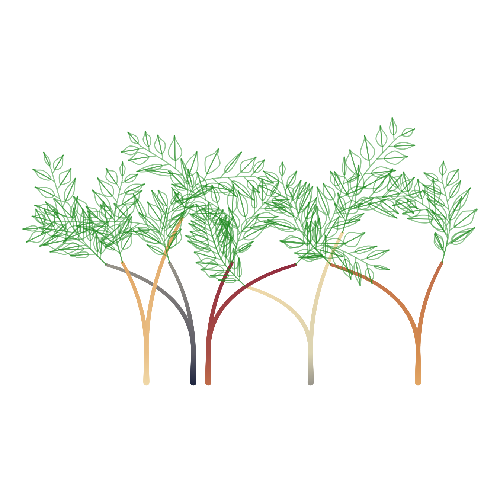

create_benjamini_tree.RmdLet’s have a look how this package can be combined with the flametree package. First we’ll load some libraries.
library(ggbenjamini)
library(dplyr)
library(tidyr)
library(purrr)
# see here: https://github.com/djnavarro/flametree/
library(flametree)
library(ggplot2)To start, we’ll first generate some flametrees and make some modifications:
ft <- flametree_grow(
seg_wid = spark_decay(time = 0.3, multiplier = 3, constant = 0.1),
seed = 21,
trees = 5,
time = 2,
angle = seq(-45, 45, 30),
split = 2
)
# modifications:
ft_mod <- ft
# shorten tree stems:
ft_mod[ft_mod$coord_y == 0, "coord_y"] <- c(0.8)
ft_mod[ft_mod$coord_y == 0.5, "coord_y"] <- c(0.9)
ft_mod <- ft_mod %>%
# increase total size of trees:
mutate_at(c("coord_x", "coord_y"), ~ . * 200) %>%
# the following will yield a smooth change of the thickness & color:
group_by(coord_x, coord_y) %>%
mutate(n = n()) %>%
mutate(
seg_wid = ifelse(n > 1, min(seg_wid), seg_wid),
seg_col = ifelse(n > 1, max(seg_col), seg_col)
) %>%
ungroup() %>%
select(-n)
p <- flametree_plot(
ft_mod,
background = "white",
palette = c("brown", "forestgreen"))
p
flametree uses quadratic beziers (made with 3 points). benjamini_branch() needs four points for each bezier. Therefore we duplicate the control point in the middle:
df_leaves <- ft_mod %>%
# Only apply to the top layer:
filter(id_time == max(id_time)) %>%
group_by(id_pathtree) %>%
summarise(tibble(x = coord_x[c(1, 2, 2, 3)], y = coord_y[c(1, 2, 2, 3)])) %>%
group_split() %>%
map_dfr(benjamini_branch, .id = "branch") %>%
unite(id, branch, i_branch, element, i_part, remove = FALSE)
#> `summarise()` has grouped output by 'id_pathtree'. You can override using the `.groups` argument.We’ll remove the top layer of branches from the flametrees and recreate the plot from above.
p <- flametree_plot(
ft_mod %>%
# remove the upper layer:
filter(id_time != max(id_time)),
background = "white"
)Now we can replace it with branches with leaves by just adding another layer to the ggplot2 object.
p +
ggforce::geom_bezier(
data = df_leaves %>% drop_na(x),
aes(x = x, y = y, group = id),
inherit.aes = FALSE,
alpha = 0.5,
color = "forestgreen"
)